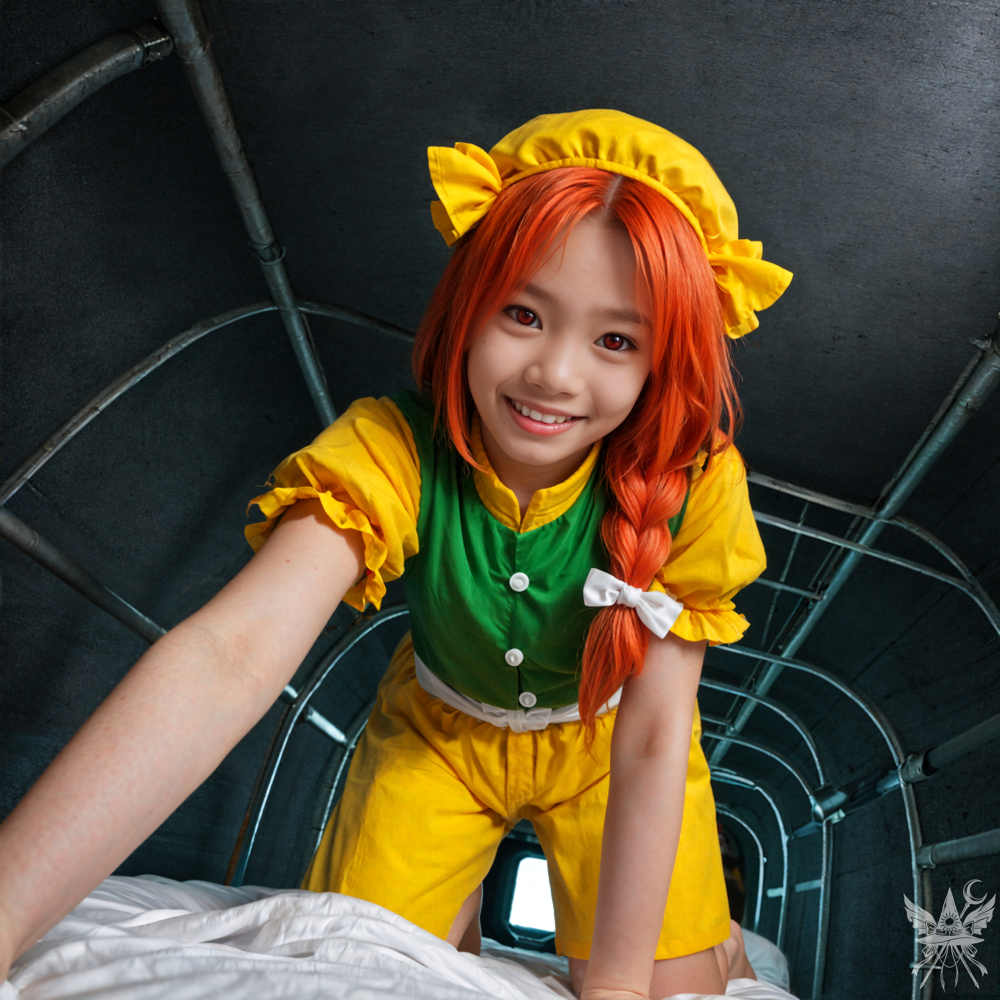
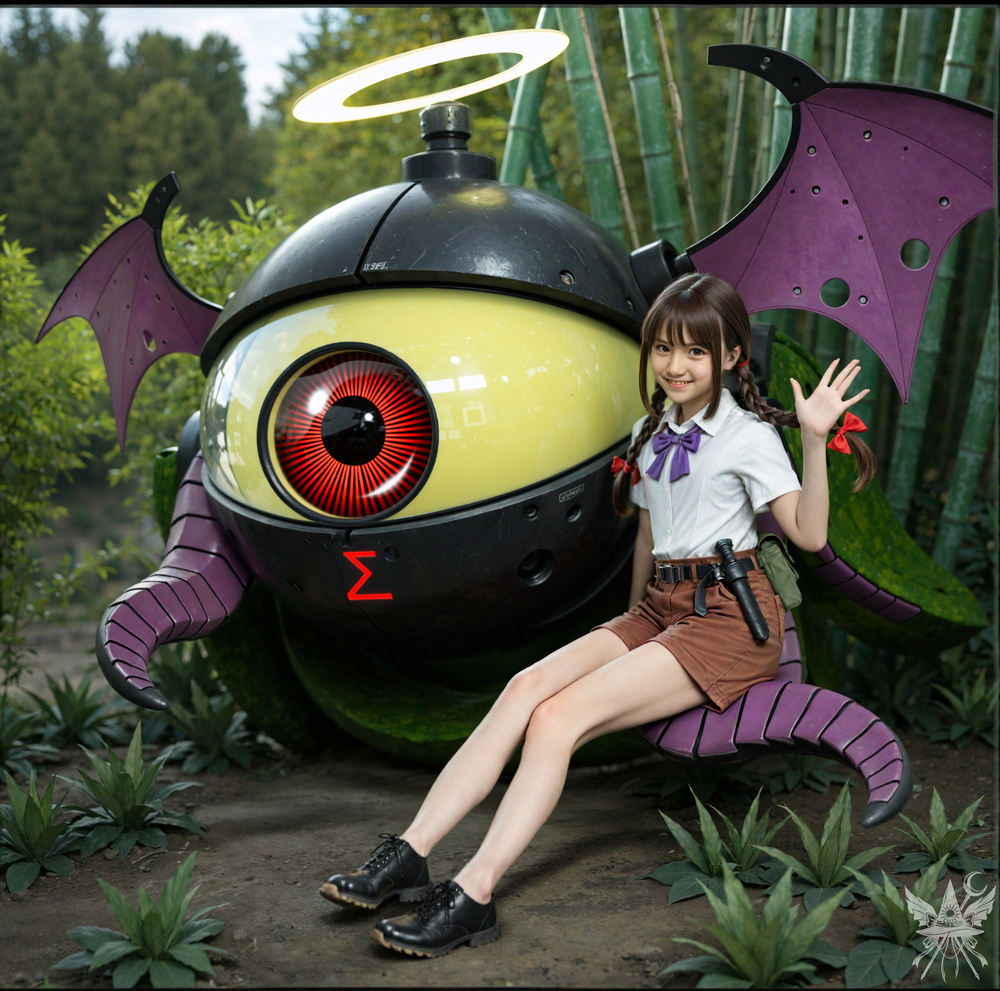

第12章 新たな試練
（フレデリカの召喚には成功した。とはいえ、問題は山積みだわ。少しずつ片付けていくしかないわね）
格納庫を後にし、台所へと足を踏み入れる。壁一面を埋め尽くす無数のボタンとレバーのパネルを横目に通り過ぎると、不規則に瞬く人工灯が網膜を刺激した。抗いようのない疲労と睡魔が全身を重く沈み込ませていく。とうに午前二時は回っているはずだ。壁に掛けられた時計のバックライトが、無機質に二時二十六分という数字を浮かび上がらせていた。
「お茶のご用意が整いました、メデア様」
いつの間にか背後に控えていたロボット少女、る～ことが、にこやかにトレイを差し出す。
（る～こと……。こんな夜更けに茶を出されても、眠気を削がれるだけだわ）
「ご心配なく、ハーブティーでございます。ぐっすりお休みになれますし、免疫力の維持にも効果がございます」
差し出されたカップを受け取ると、金属製という見た目に反して酷く軽かった。視線を前方へ向けると、テーブルにはすでに理香子と里香が突っ伏し、浅い寝息を立てている。
「あの……図々しいお願いで恐縮ですが、今夜はここに泊めていただけないでしょうか？」
静かに、波風を立てぬよう遠慮がちに問いかける。
「あったりめぇだろ！ おめえの魔法がなかったら、牢獄をめちゃくちゃに壊すハメになってたし、あの頭のおかしいババアに気づかれてたかもしれないっての！ いつでも大歓迎なのです！」
（もう夜中の三時近いというのに、里香のこの無駄な活力はどこから湧いてくるのかしら……）
差し出された茶に口をつける。小さな黄色い花びらと葉が浮いた液体からは、野を吹き抜ける風のような、微かな植物の香りが立ち上った。
「ねえ、里香さん。この施設は電気を使っているのかしら？ 発電所でもあるの？」
素朴な疑問を口にする。
「発電？ なんだそりゃ？」
まるで未知の言語でも聞いたかのように、怪訝な表情で見つめ返される。
「もしかして、魔力のこと？」
「うーん……照明とか、機械を動かすエネルギーのことなのだけれど」
そのやり取りを聞きつけ、理香子が緩慢な動作で顔を上げた。
「ワイヤレス魔力伝送って知ってる？ もしかして、メデアさんの世界ではそれを電気って呼んでるの？」
「聞いたことはあるけれど……電力伝送って、結局のところあまり実用化されなかったんじゃないかしら？」
こちらの無知を軽く嗜めるような笑みを浮かべ、理香子が言葉を継ぐ。
「どこかの世界ではね。でも、ここではその成果を思う存分見ているはずよ。周りを見渡してごらん、一本の電線もないわ」
里香が大仰な身振りで、地下深くを指し示した。
「旧地獄のことなのです！」
「ええ。ここはかつて、私たちと河童との巨大な共同プロジェクトだったのよ」
「あーもう、あの忌々しい河童ども！ いつか絶対ぶっ潰してやるっての！」
怒りで声を震わせ、虚空を鋭く睨みつける姿をよそに、理香子は淡々と説明を続ける。
「旧地獄の地下に発電所を作るという依頼を受けたの。あの過酷な環境で最も適した方法として、原子力発電所を選んだのよ」
「あたいが、あのカラスのために調整キーを作ってやったんじゃねぇか！ 変換回路だって、あたいたちがいなきゃどうにもならなかったっての！ ここ一年エネルギー供給が不安定なのも、絶対やつらのせいなのです！」
「落ち着いて、里香。私もあの時は随分と働いたわ。原子炉の建設は河童たちの得意分野よ。そして見ての通り、私たちは今もその成果を享受しているわ」
（河童？ 原子炉？ 旧地獄？ 新地獄？ ……専門用語の羅列で頭が痛くなりそうね）
「理香子様。メデア様には、直ちにゲストルームへお休みいただくことをお勧めいたします」
知識欲に駆られた二人をよそに、メイドロボットだけがこちらの限界に気づいて、助け舟を出してくれた。
案内されたのは、およそゲストルームとは呼べない殺風景な小部屋だった。息苦しいほど狭い二段ベッドの上段では、救出したばかりのオレンジが足を投げ出して眠りこけている。下の段に身体を横たえた瞬間、泥のような深い眠りが意識を刈り取っていった。
＊＊＊
泥沼のようなまどろみから意識が浮上する。焦点の合わない視界に、鮮烈な色彩が暴力的に飛び込んできた。地下特有の淀んだ湿気と、粗末な毛布の埃っぽい匂いが鼻を突く中、顔の真上に覆いかぶさるような温かな熱源の気配がある。昨夜のひりつくような警戒心は完全に消え去り、無防備すぎるほどの親愛の情が、息苦しいほどの至近距離から注がれていた。

「メデたん！ 起きてメデたん！ ありがとう！ ねえ聞こえてる？ ありがとうって言ってるの！」
（息が……胸郭が圧迫されて呼吸が……！）
「どうやって恩返ししたらいいの！？ オレンジ、な～んでもするよ！」
薄れゆく意識の中で、激しく身体を揺さぶる少女を睨みつける。
「ゴホッ……！ わ、分かったから、まずは私の上からどいてちょうだい……」
弾かれたように飛び退く気配がした。
「あ、ご、ごめんね！ でもでも、メデたんはオレンジの命の恩人だもん！」
視界の端で、ハンガーに几帳面に掛けられたローブが目に入る。まるで手入れの行き届いたホテルのようだ。沈黙のままローブを羽織ると、足音ひとつ立てずにる～ことが室内へと滑り込んできた。
「朝食のご用意が整いました」
る～ことはにっこりと笑った。
（誰が作ったのかしら。人間みたいに笑うなんて）
人工照明が昼夜の感覚を麻痺させる地下空間。台所へ向かうと、すでに朝食を摂りながらドライバーで小型機械を弄り回す里香の姿があった。
「おっ、起きたか！ よく眠れただろ？」
「ええ、おかげさまで。理香子さんは？」
「下の階だ。また懲りずに何か怪しい実験でもやってるんだろ」
食卓には昨日と同じ、ご飯と焼き魚が並んでいる。隣ではオレンジが凄まじい勢いで食物を胃袋へ詰め込んでいた。その警戒心の欠片もない無邪気な姿に、微かな羨望を覚えつつも、向けられる熱視線の意図を探る。
「むぐむぐ……ねえねえ、メデたんはごこ行くのん？」
「……とりあえず、口の中のものを飲み込んでから話したらどうかしら？」
「メデたんって、ここの人じゃないよね？ 旅してるの？」
「ええ、まあ。そうとも言えるわね」
深入りを避けるように里香へと向き直る。
「ご馳走様でした。そろそろ失礼するわ。朝倉さんにも挨拶をしておきたいのだけれど……」
「あー、もう行くのか？ 早ぇな……」
じっと見つめてくるオレンジの視線が、どうにも気になり始める。何か言いたげに溜息をつくオレンジを制し、里香が釘を刺した。
「理香子の邪魔はしねぇ方がいいっての。あいつ、怒るとマジで別人になるからな！」
「それなら仕方ないわね。ただ『ありがとう』とだけ伝えておいてちょうだい」
茶を喉に詰まらせて咳き込みながら、オレンジが身を乗り出してきた。
「ねえねえ、一体どこに行くつもりなの？」
（正直に答えたところで、有益な情報が得られるとは思えないけれど……）
「魔界に用事があるのよ」
二人が同時に息を呑む音が響いた。顔を上げると、先程までの呑気な表情は消え失せ、あからさまな緊張が張り詰めている。
「マジかよ！ おめぇ、魔界になんの用があるってんだ！？」
「悪いけれど、詳しい事情は話せないわ」
「門抜けてから飛ぶ気か？ っつか、おめえ、そもそも飛べるのかよ！？ 幻夢界じゃ、ちゃんと飛ばねぇとマジで終わりだぜ。行きも帰りも道が分かんなくなっちまうからな……」
「心配には及ばないわ。門番が案内してくれるはずよ」
「門番って、あの老いぼれじじい、シンギョクのことか！？」
残りの茶を一気に飲み干し、里香は乱暴にカップを叩きつけた。
「仕方ねぇ、送ってってやるよ！ ちょうどエレンのところへ用事があったから、ついでなのです！」
＊＊＊
遺跡の出口で「じゃあね」とだけ告げて歩き出す。オレンジはいつまでも、こちらの背中を見送っていた。
再びあの危険なミサイルに乗せられる覚悟をしていたが、案内されたのは全く異なる代物だった。
『イビルアイシグマ』
と呼称されるそれは、巨大な眼球を模した金属球体に悪魔の翼を接合し、無数のパイプを這わせた異形の乗り物だ。下部から這い入るキャビンは極端に狭く、二人で息が詰まるほどの空間しかない。里香がレバーを操作すると、球体正面の「目」から見える景色がゆっくりと沈み込み、機体が浮上を開始した。
冷たい鋳造金属の重厚な塊と、竹林から差し込む柔らかな木漏れ日の対比が、ひどく現実離れした空気を醸し出している。頭上に浮かぶ光の輪が人工的な白光を放ち、別れの静寂を冷ややかに照らし出していた。そんな異形の怪物の背で、制服姿の少女が無邪気に手を振る様は、まるで狂気と平穏が同居する悪夢のようだった。

数分の飛行の末、見覚えのある柳林の入り口へ乱暴に着陸する。
「じゃ、これで借りは返したぜ。もしおめぇが運良く生き残ってたら、また遊びに来いっての！」
胸中で複雑な感情を処理しつつ軽く会釈を返し、ひんやりとした空気が淀む洞窟へと足を踏み入れた。
「門番。私は試練を受ける準備ができています」
冷たい岩肌に自身の声が反響するのを確認する。
空間が青白い魔光に満たされ、空間を歪める門の輪郭が顕現した。しかし、そこに立っていたのは――前日の老人とは似ても似つかない、長い赤紫の髪に二本の角を生やした女だった。
「吾輩は若き君をお待ちしておりました。君が選ばれる試練は何でございますか？」
極端に芝居がかった、ひどく恭しい声が洞窟に響く。
（一体何なの……？）
「ちょっと待ってください。あなたは一体、誰ですか？」
女は心底驚いたような素振りを見せた。
「わずか昨日、わたくしたちお話ししたばかりではございませんか。吾輩はシンギョク。この門の守り主でございます」
（私が狂ったのか、それとも……。面倒ね、さっさと済ませましょう）
「……名誉の試練を受けます」
「よろしゅうございます、お嬢さん。名誉の試練は、古代の神々、この門、そして若き君ご自身へ、魂の清らかさを証明する誉れ高き機会でございます」
（姿を変えただけでなく、口調まで大仰になっているわね）
「前置きは結構です。本題に入っていただけますか？」
「全てには時がございまする、若き君。課題をよくお聞きなさいませ。昨朝、魔界より極めて危険な犯罪者たる悪魔、ルイズ殿が逃亡なさいました。若き君には、彼女の捕獲、または無力化にご協力いただきまする。ルイズ殿を生け捕りになさるか、もしくは極刑に処した上でその証拠をご持参いただくか……彼女が滅亡したという確たる証拠をご提示いただければ、名誉の試練突破となりまする、お嬢さん」
（冗談じゃないわ。ルイズを狩れと言うの？ シンギョクの奴、姿を変えた上に記憶まで混濁しているのかしら。彼女を敵に回すメリットなど何一つないというのに）
思考を高速で巡らせる隙を与えず、忌々しい声が続く。
「もしも若き君がルイズ殿の居場所をご存じなければ、すでに本件を調査中である警察にお尋ねになればよろしゅうございます……」
湿り気を帯びた洞窟の静寂が、突如として爆発的な熱波によって引き裂かれた。高速で回転する炎が岩肌に獰猛な影を躍らせ、肌を焦がすような殺気が空間を満たす。しかし、その躍動する熱量を迎え撃つのは、底知れぬ冷酷な静謐だった。あまりにも無造作に放たれた不可視の障壁が、圧倒的な実力差という絶望を伴って、熱風を冷ややかにせき止めている。

「うるさーいっ！ 話が長いのよ、このくどくど女！！」
聞き覚えのある大声だった。振り返ると、薄暗い入り口に、息を切らしながら杖を構えたオレンジの姿があった。
「ダメ！ メデたんを今すぐ魔界へ通しなさい！」
「お下がりなさいませ、若き君。さもなくば、実力を行使いたしますぞ」
無機質な警告と共に、気配が鋭く研ぎ澄まされるのを感じる。
「もしかして、力の試練をご所望でございますか、お嬢さん？」
「試練なんかどうでもいい！ オレンジたちはあんたをそのままぶっ潰すよーん！」
獣のように跳躍したオレンジが杖を振るい、空間が熱に歪む。
「お下がりなさいませ、若き君。試練を介さずして、この吾輩に勝てる道理などございません」
女の掌が冷たい光を帯び、防御の壁を構築していく。
「オレンジをなめちゃダメ！」
炎の輪がオレンジの全身を包み込み、狭い空間の酸素を貪欲に奪い去っていく。
「メデたん！ 一緒にこいつをやっつけるよ！」
熱のこもったまっすぐな目が、こちらを見ていた。手元の魔導書が、主の意思に呼応するように、かつてないほどの激しい輝きを放ち始める。